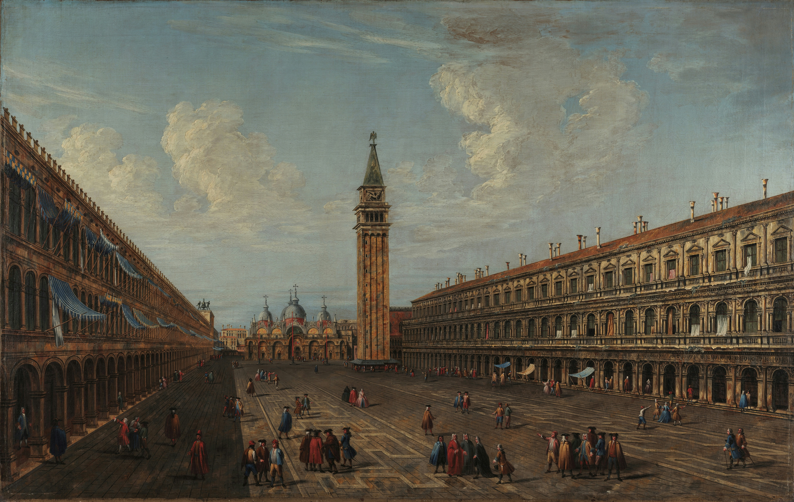
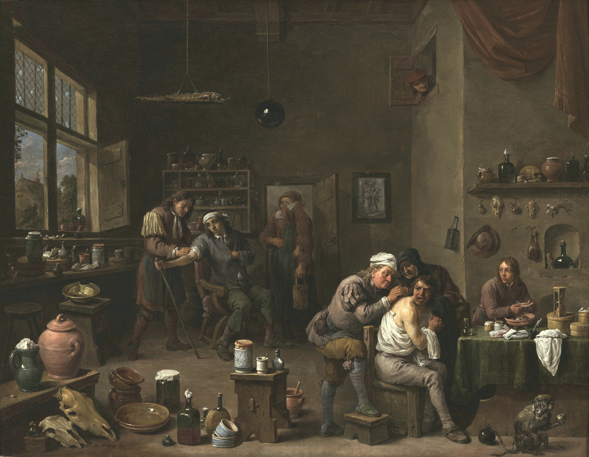

: Visual Understanding of VLMs in Really Dense Scenes
🔥 News
- [2026/04/16] Added results for Qwen 3.6 (non-thinking).
- [2026/04/14] Added results for Gemma 4, InternVL 3.5, and Qwen 3.5 (all non-thinking).
- [2026/02/21] VisualOverload is accepted into CVPR 2026!
Abstract
Is basic visual understanding really solved in state-of-the-art VLMs? We present VisualOverload, a slightly different visual question answering (VQA) benchmark comprising 2,720 question–answer pairs, with privately held ground-truth responses. Unlike prior VQA datasets that typically focus on near global image understanding, VisualOverload challenges models to perform simple, knowledge-free vision tasks in densely populated (or, overloaded) scenes. Our dataset consists of high-resolution scans of public-domain paintings that are populated with multiple figures, actions, and unfolding subplots set against elaborately detailed backdrops. We manually annotated these images with questions across six task categories to probe for a thorough understanding of the scene. We hypothesize that current benchmarks overestimate the performance of VLMs, and encoding and reasoning over details is still a challenging task for them, especially if they are confronted with densely populated scenes. Indeed, we observe that even the best model (o3) out of 37 tested models only achieves 19.6% accuracy on our hardest test split and overall 69.5% accuracy on all questions. Beyond a thorough evaluation, we complement our benchmark with an error analysis that reveals multiple failure modes, including a lack of counting skills, failure in OCR, and striking logical inconsistencies under complex tasks. Altogether, VisualOverload exposes a critical gap in current vision models and offers a crucial resource for the community to develop better models.
- 2,720 question-answer pairs
- 6 tasks and 3 levels of difficulty
- fresh image data
- all images are public domain
Leaderboard
You can benchmark your own model by submitting your predictions to our evaluation server. If you want your submission to appear on the public leaderboard, please follow the instructions to open a GitHub issue.| Model | Special Inference | Activity | Attributes | Counting | OCR | Reasoning | Scene | Easy | Medium | Hard | Total |
|---|
Example Questions

Depending on the shadow of the people, what is the most likely position of the sun?
Options: A. behind the right building, B. behind the left building, C. its night time, D. behind the middle tower
Task: Reasoning

What is the ninth word of the caption below the image?
(freeform)
Task: OCR

How many live animals can be seen?
(freeform)
Task: Counting
BibTeX
@InProceedings{Gavrikov_2026_visualoverload,
author = {Paul Gavrikov and Wei Lin and M. Jehanzeb Mirza and Soumya Jahagirdar and Muhammad Huzaifa and Sivan Doveh and Serena Yeung-Levy and James Glass and Hilde Kuehne},
title = {{VisualOverload}: Probing Visual Understanding of VLMs in Really Dense Scenes},
booktitle = {Proceedings of the IEEE/CVF Conference on Computer Vision and Pattern Recognition (CVPR)},
month = {June},
year = {2026}
}